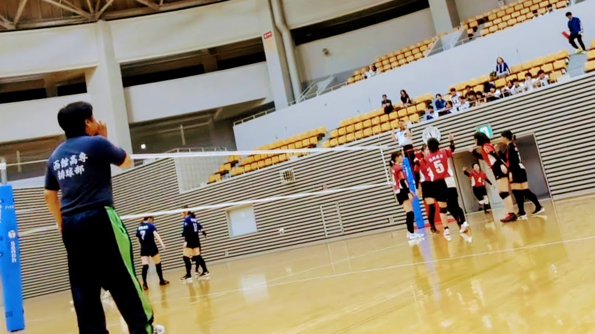
ACHIEVEMENT
(2025) Player & Trainerを更新しました！
(2025) 女子、高校新人大会(@白百合高校)出場
(2024) 女子、函館けいりん杯(@大妻高校)出場
(2024) 男子、函館けいりん杯(@函館アリーナ)出場
(2024) 男子、全道高校体育大会(高体連)全道大会出場(2年連続)
(2024) 北海道高等学校総合体育大会バレーボール競技大会 男子準優勝
(2024) 高専体育大会、北海道地区大会@釧路、女子3位、男子準優勝
(2023) 高専体育大会、北海道地区大会@どこか、女子準優勝、男子準優勝
(2023) 男子, 全道高校体育大会(高体連)全道大会出場(27年ぶり)
(2023) 北海道高等学校総合体育大会バレーボール競技大会 男子準優勝
(2022) 高専体育大会、北海道地区大会@どこか、女子準優勝, 男子準優勝
(2021) 高専体育大会、北海道地区大会@どこか、女子準優勝, 男子準優勝
(2018) 女子、高専体育大会、全国大会出場@福岡県久留米市
(2017) 女子、高専体育大会、全国大会出場@東京都大田区
(2016) 女子、高専体育大会、全国大会出場@岐阜県岐阜市
(2015) 女子、高専体育大会、全国大会出場@熊本県山鹿市
(2014) 女子、高専体育大会、全国大会出場@徳島県徳島市
(2013) 女子、高専体育大会、全国大会出場@岩手県一関市
(2012) 女子、高専体育大会、全国大会出場@島根県松江市
(2011) 女子、高専体育大会、全国大会出場@茨城県ひたちなか市
(2010) 女子、高専体育大会、全国大会出場@三重県伊勢市
(2009) 女子、高専体育大会、全国大会出場@長崎県佐世保市
MESSAGE
最近は他校との合同チーム（七飯高校・函大柏稜・函館水産・江差など）で活動しています。函館商業の練習に混ぜてもらうことも あります。今までは出来なかったような、質の高い練習ができるようになってきました！！同世代の上手い選手とバレーの話をすると、 バレーの楽しさ・難しさを再認識できます！
特に厳しい部では無いですので、「運動したいなー」・「なにか新しいことはじめたいなー」という方々は、ぜひ 見学に来て下さい。
●初心者大歓迎（そもそもほとんどが初心者です）
●兼部・バイト自由（ぼくは写真部に入りました）
●学業優先（学業やデザコン、留学、留年など）
●身なり自由（おしゃれを楽しんで下さい）
練習見学や練習試合は常時受け付けているので、下のCONTACTからご連絡下さい。選手・マネージャー共に絶賛募集中です。 女子は月・水(隔週)・木・土(午前or午後)に練習しています。
WHAT'S NEW
31st December 2025
今年の顧問は担任業におわれて、大変でした。体重もちっとも減りません。夜もぐっすりです。 本当に忙殺状態で、WEBページ更新できなかった...なんて年だ！！来年もよろしくね！
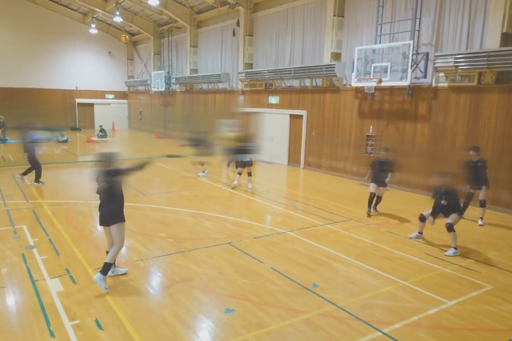
28th December 2025
七飯高校, Nanae Highschool, Nanae, Kameda, Hokkaido,
練習納めです。今日は商業のスタッフがたくさん来てバンバン球出ししてくれました。顧問２号も選手に紛れて 練習出てきました。スリーマンであんなにしごかれたのは久しぶりです。
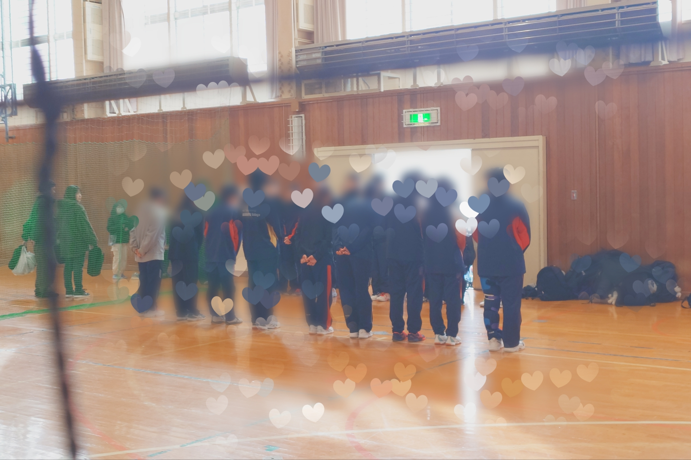
27th December 2025
七飯高校, Nanae Highschool, Nanae, Kameda, Hokkaido,
合同練習です。商業・七飯・水産です（私の記憶が正しければ）。
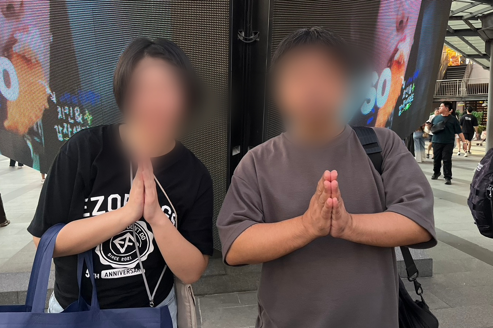
20th December 2025
タイ王国, Thailand
タイの草むらを歩いていると、突然、野生のO山（オーやま）先生が飛び出してくる事があるようです。 選手の一人が研修でタイに行ってきました。そこで、主任顧問兼エグゼクティブハイパークリエイターの O山先生にあったようです。「ねむり」や「まひ」にすると捕獲率があがります。ASぶっぱして、こだわりハチマキを持たせましょう。
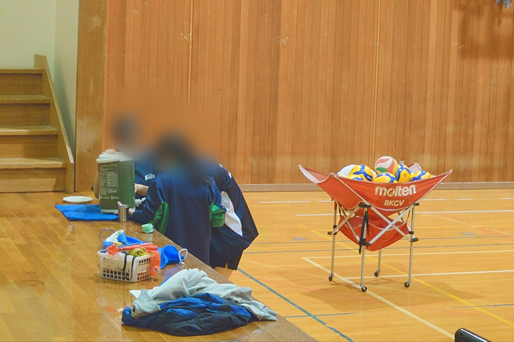
19th December 2025
七飯高校, Nanae Highschool, Nanae, Kameda, Hokkaido,
函館けいりん杯も終わったので、照準は１月の新人大会へ！ 凄い練習スケジュールです。
12/19: 商業と練習＠七飯
12/20: 中学生と練習試合＠七飯
12/21: 練習試合＠七飯(vs商業と教育大)
12/26: 練習(vs浜分中、函館西)＠七飯
12/27: 中学生と練習試合(vs浜分中、函館西)＠七飯
12/28: 練習(商業)@七飯
1/4-8: 試合＠七飯
1/9: 練習@どこか
1/10: 練習試合@水産
1/11: 練習試合@中部
1/12: 新人大会@アリーナ
1/13: 勝てば新人大会@アリーナ
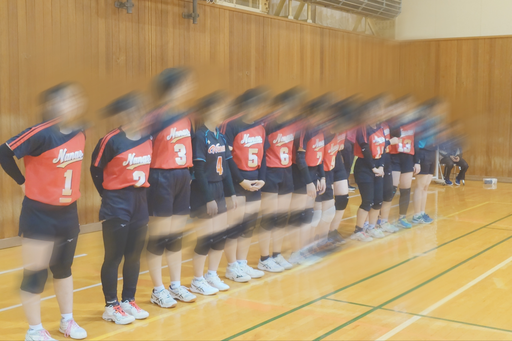
13th December 2025
七飯高校, Nanae Highschool, Nanae, Kameda, Hokkaido,
函館けいりん杯2日目🔥 いわゆる決勝トーナメントです。昨日の勢いそのままにのびのびプレイしてました。 結果は...一回戦突破！！うえぇーい！スゴイぞー！カッコいいぞー！対戦相手は経験豊富なチームだったのですが、 相手のペースに付き合わず自分たちのバレーが出来たと思います👍
２回戦の相手は強敵「渡島合同」！渡島チームは最初のうちはバタバタしていましたが、気づけばリードを撮られていました。 自力の差もあったと思いますが、試合中の修正能力に特に差が有りましたー。惜しくも負けてしまいましたが、充実した二日間でした！ ありゃした！
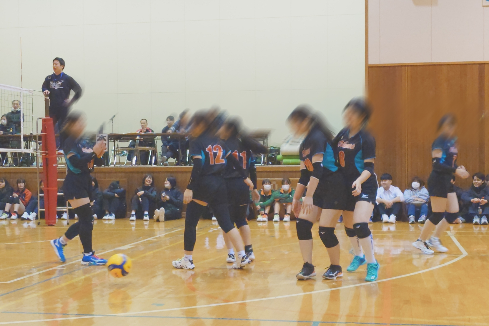
13th December 2025
七飯高校, Nanae Highschool, Nanae, Kameda, Hokkaido,
なんとなんと！１日め突破です🔥 うぇーい！ひゅーひゅー！めでたい！！二日目に 行けるってのは、こんなに嬉しいことなんですね！今日は函館けいりん杯の本番でした！会場は七飯高校。
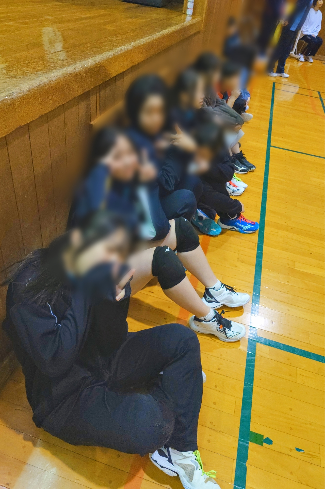
感染症が出ることを心配して、結局２チームエントリーは出来ませんでした。そのため、各セットをこどもちーむ （函館の未來ズ）と大人チーム（大人風バレーバーラー）でプレイすることに。やはり、経験から来るものか、大人風 チームの方が試合巧者だったと思います。ちょっとくらいイレギュラーが起こっても、動じません。うちの選手（３年生２人、 ５年生２人）も普段より美味かったです。周りに引っ張られていたのだと思います。特に３年生は違う人かと思いました。 打点も高かったし、バタバタしないし。１年ズは色々経験すればもっと楽しくプレイできます。
写真は試合中の様子です。他校の学生とも仲良く出来ていて、ぼくが嬉しかったです。何かの人生経験になると良いですね👍
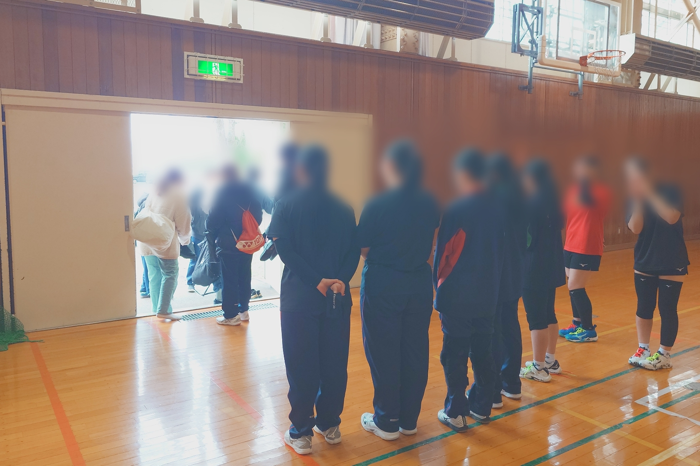
7th December 2025
七飯高校, Nanae Highschool, Nanae, Kameda, Hokkaido,
七飯高校で練習です🔥 七飯高校の体育館はあったかいなぁ（※現在、高専体育館の暖房は修理されています。本当です。）
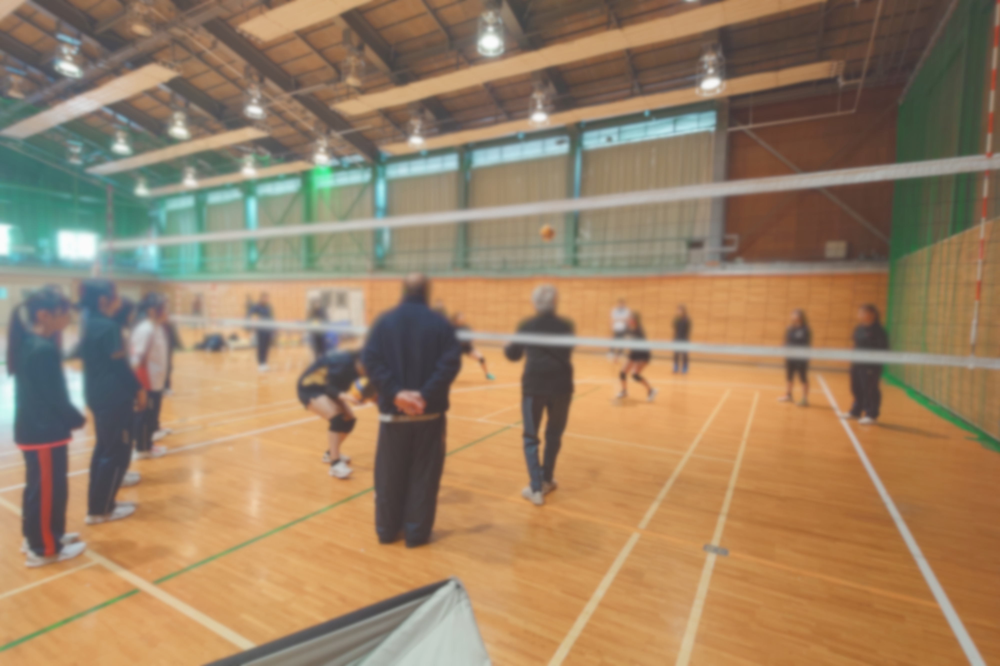
6th December 2025
函館高専, NIT-Hakodate, Hakodate, Hokkaido,
年明けには、新人大会（２年生以下が出場）が催されます。函館高専は１年生二人が参加します。幸運なことに 合同チームに参加させて貰います。今回は、七飯高校・函館水産・函大柏稜・江差の合同チームです。どこも、やる気が あるのに選手が２・３人というチームでした。やる気ある分結構上手いです！！
今日は高専の体育館で練習です。「えっ？外壁無いんすか？」ってくらい寒かったです（現在、暖房は修理されています）。 寒い中、怪我せず、喧嘩せず練習できた！写真は「バレー仙人」が指導している様子です。仙人は球出しの要求が高かった！ 私も練習しないと🔥
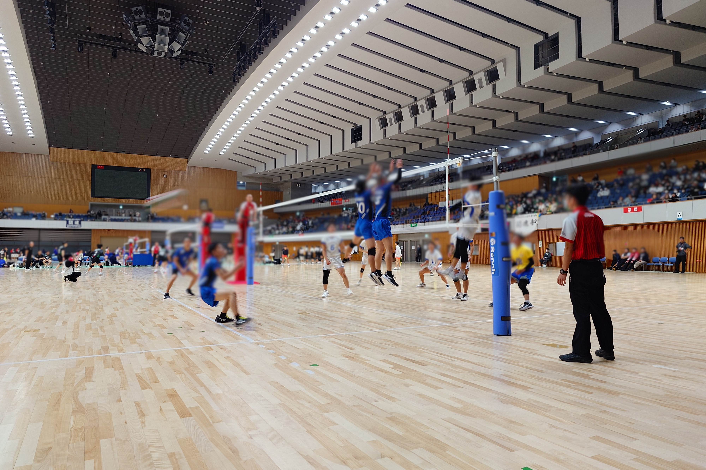
5th November 2025
北海きたえ〜〜〜〜る, Hokkai Kitayell, Sapporo, Hokkaido,
こんにちは。Coach the Second, a.k.a. “No.2”です。函館高専男子バレー部が晴れて全道大会に駒を進めました👏 顧問2号は引率です。去年も思いましたが、全道大会なると途端にレベルがあがります。函館高専は残念ながら負けてしまい ましたが、函大有斗が一回戦を突破しました！！まじですげぇ！一緒に練習したこともあるので、嬉しいです！
帰ったら休講にした分の振替講義の嵐です。。だれかー！仕事を減らしてくれー！！
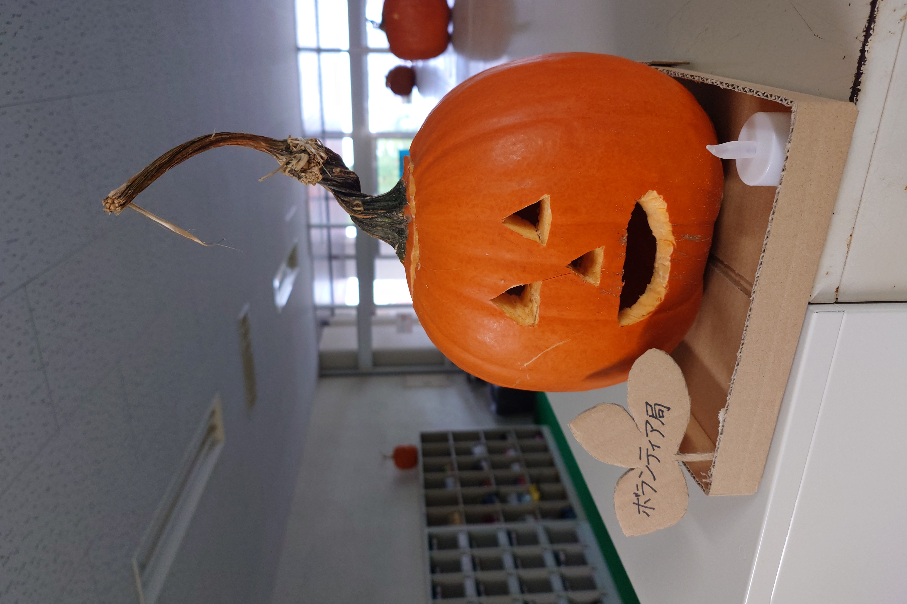
1st November 2025
七飯高校, Nanae Highschool, Nanae, Kameda, Hokkaido,
有り難いことに、七飯高校と合同で函館けいりん杯（オープン大会）に出場することになりました。 そのため、今日は七飯高校で合同練習でした。函館けいりん杯は、市民大会であるため、４・５年生も七飯高校の３年生も 出場できます。狙いとしては、「七飯・高専（ヤングチーム・新人戦を意識）」と「七飯・高専（おとなチーム）」の２チームで 出場することです💪
練習の写真を取り忘れちゃった怠慢プレイはみんなには内緒です。代わりに七飯高校ボランティア部のJack-o'-lantern 貼っておきます！ハッピーハロウィン！
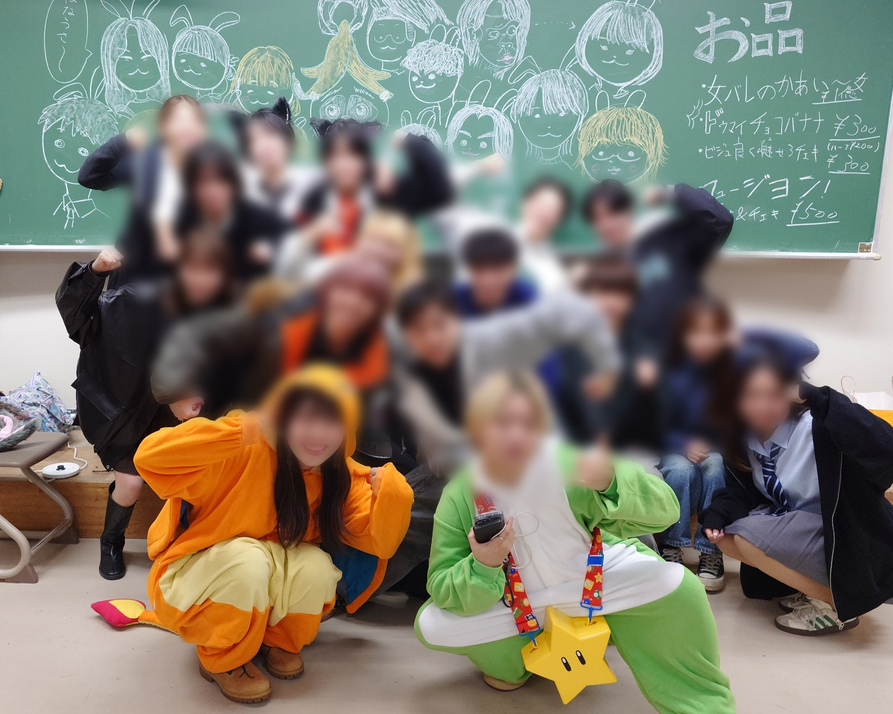
20nd October 2025
函館高専, NIT-Hakodate, Hakodate, Hokkaido,
函館高専文化祭二日目です。 女バレは人がかつかつだったのですが、それぞれのクラスメイトや子分(?)・手下(?)が手伝ってくれたので、なんとか回りました！皆さん有難う👍
今年は、かなり場所が悪かったので客入りは悪かったです。でも、チェキは本当に素敵でしたよ！！ ぼくも 同僚（筋肉、田中みなみ、努Jr）とチェキを取りました笑 完成度が高い！
顧問２号は、担任として面談たくさんしましたー！保護者と話すのも少し慣れました。
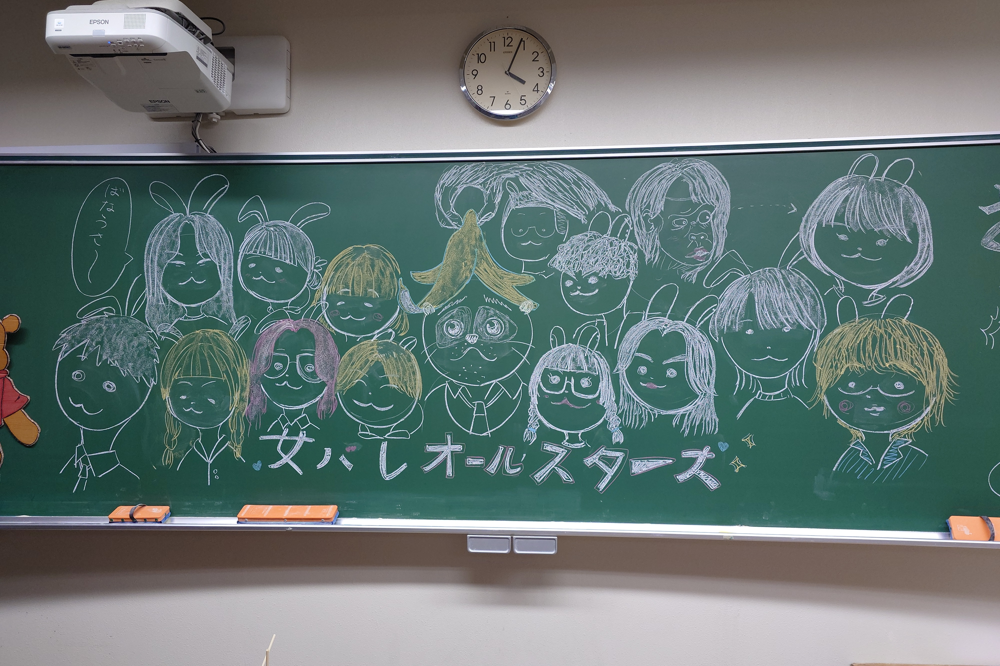
20nd October 2025
函館高専, NIT-Hakodate, Hakodate, Hokkaido,
函館高専文化祭一日目です。 気持ちを込めてぶち割ったでっかいチョコが、やっと商品になってお客様の元へ。業務用のチョコがでかすぎて笑って、 それをカチ割ってわらいました。
毎年、選手が黒板に似顔絵を書いてくれます！去年とは作風が変わってますが、相変わらず上手いですね！ 一番左の目が決まっているのが私（顧問２号）、真ん中のたぬきさんが主任顧問兼エグゼクティブスーパークリエイティブ プロヂューサーのO山先生です。
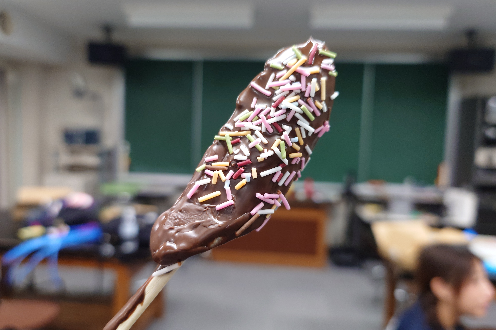
20nd October 2025
函館高専, NIT-Hakodate, Hakodate, Hokkaido,
函館高専文化祭の時期です。 今年の文化祭スローガンは「滾（たぎる）」だそうです。 女子バレー部の出し物は、チェキ！高専祭にはたくさんの コスプレボーイ・ガールが来るので、思い出の一枚をどうぞ！もう一つはチョコバナナです！顧問２号は数年ぶりにチョコバナ たべたけど、うまかった👍 チョコをハンマーでぶっ叩く選手が印象的でした。
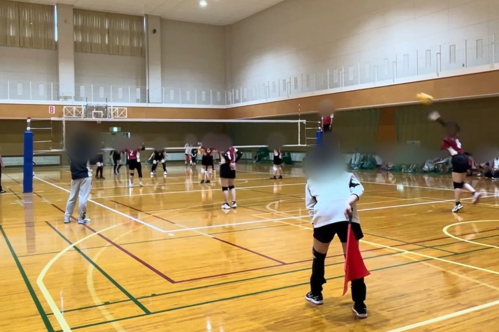
12nd July 2025
サンリフレ函館, Sun-Refre Hakodate, Hakodate, Hokkaido,
高専大会本番です。十分な準備で挑みましたが、釧路高専にも苫小牧高専にも負けてしまいました。顧問２号監督の初勝利は 今回もお預けです。セッターの骨折やミドルの捻挫などが大会前に立て続けに起こりました。うーん、なんともやりきれません。 準備の練習試合を見ていると、万全で挑めば、優勝の可能性も大いに有りました。ケガは仕方ない部分と、防げる部分があります。 大会前だけではなく、普段から不断の努力を怠らないことです。接触は声掛けで防げます。捻挫は筋力で防げます（グニりに反応して戻す力）。また、来年に向けて再出発です。
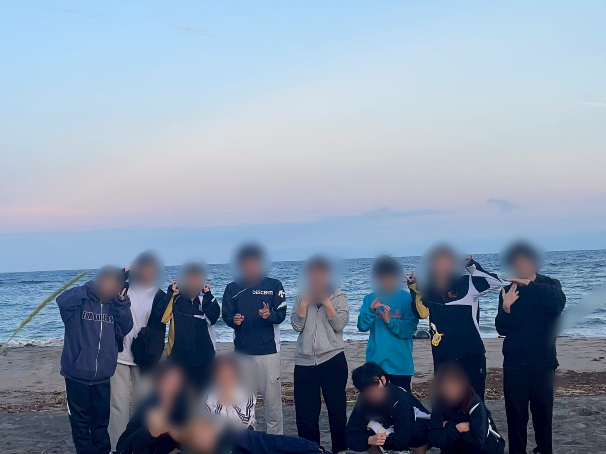
反省会（と３年生から５年生への愛のムチ）のあと、ビーチで少し遊びました。相撲大会やDJ行司など、 バカみたいに笑いました。ハジけるときハジける選手が多いので、楽しくやってます。来年はリベンジ！絶対倒す！
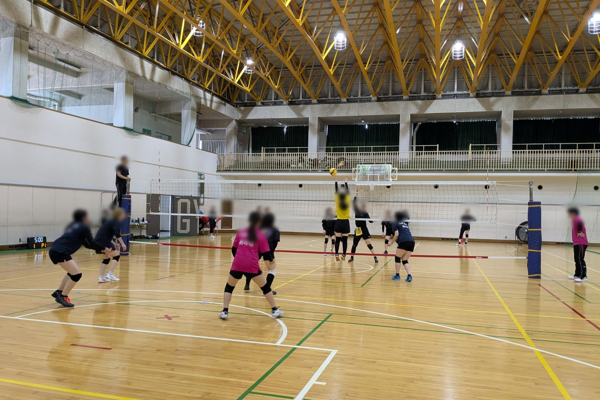
21st June 2025
函館白百合学園高校, Hakodate Shirayuri Gakuen High School, Hakodate, Hokkaido,
7月の高専大会に向けて、函館白百合と練習試合をすることが出来ました。「プロックでタッチを２回とる」「サーブで３点取る」 「他人のボールを一度も奪わない」など、具体的な個人目標をもって挑みました。ただ、漠然と試合をしていた頃よりは、具体性を増して 来ましたね。
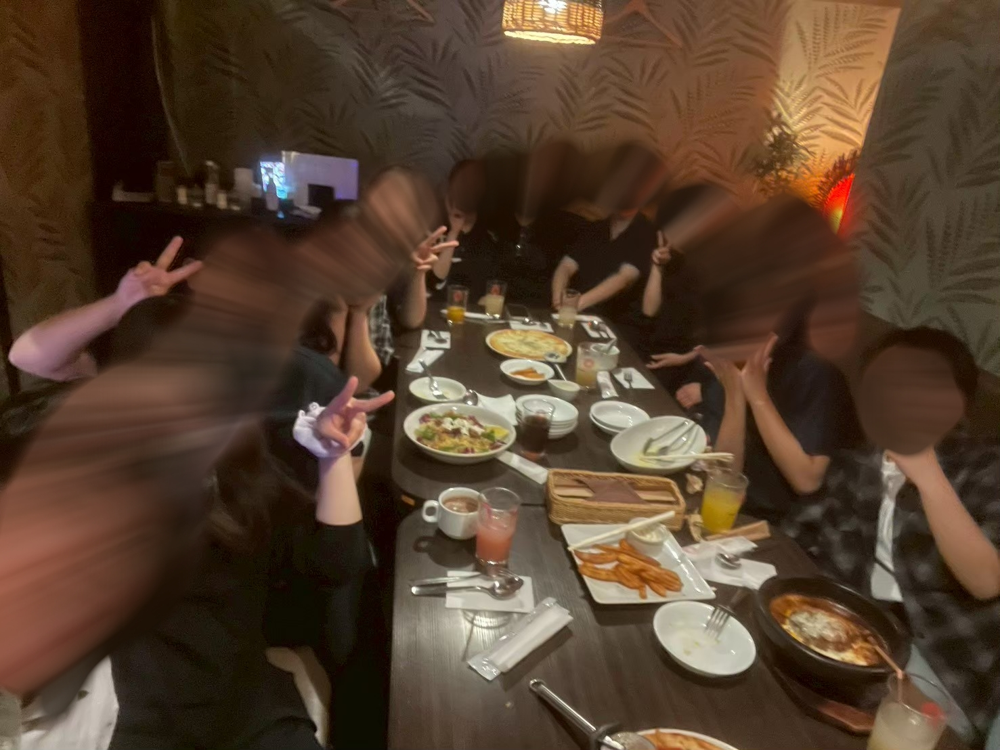
練習試合の後は、新入生歓迎会が出来ました。場所・日時決めがグダったのは悪いところ。歓迎会を楽しく出来たのは とても良いところです！ アメリカンドックの串をちびちびし、ジュースを呑む。おじさんでした。
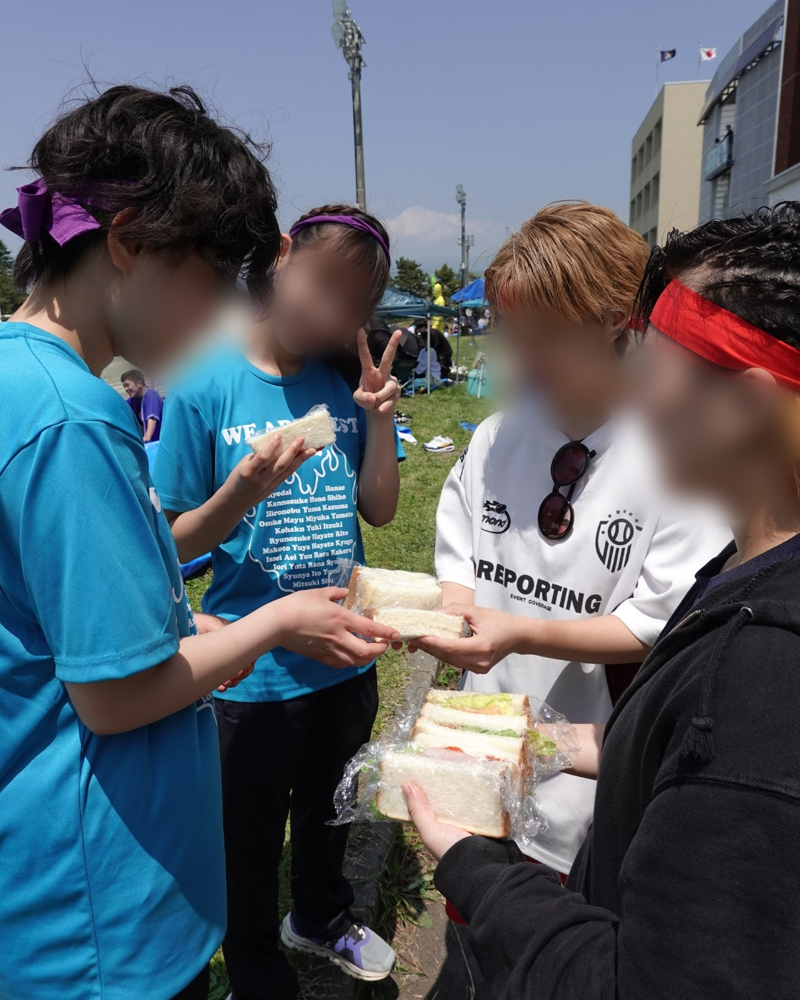
18th June 2025
函館高専, NIT-Hakodate, Hakodate, Hokkaido,
体育祭が有りました！天気もバッチリ晴れて楽しい楽しい！わたし（顧問２号）は、 担任として「クラスTシャツのはっちゅう？！」「締切日あるの？」と、てんやわんやでした。最後は事務の方が手伝ってくれて、無事に体育祭本番に間に合いました！ 女バレの方々もみんな気合入っていて良かったです👍 外スポーツは、日焼けが怖いだねー。
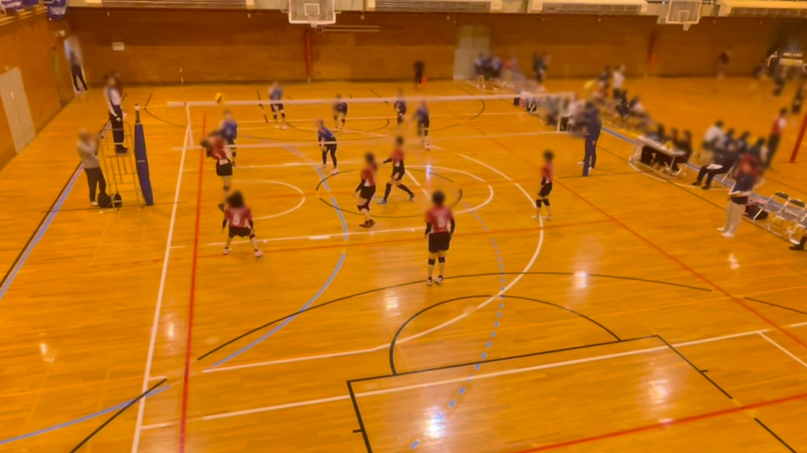
25th May 2025
市立函館高校, Hakodate High School, Hakodate, Hokkaido,
高体連は函大柏稜と合同チームで参加しました。彼女らとの合同チームももう４回めくらいです。単独チームのときよりは、 選手層が厚くなりました。しかし、新セッターなど課題は山積みです。試合経験を積ませることは出来ている気がします。 もう少し、普段から充実した練習ができるといいなぁ。
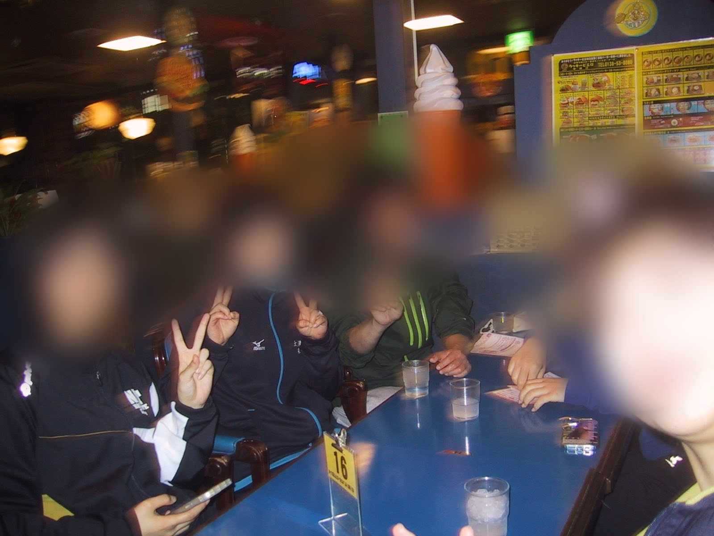
20th May 2025
ラッキーピエロ本通店, Lucky Pierrot Hondouri branch, Hakodate, Hokkaido,
これは何のときに行ったんだっけか？さっぱり解らない👀 でも、選手が眉毛シール貼ったり、ぼくが携帯の上にどっかりシェイクこぼしたのは覚えている。これは何のときの写真だろ？
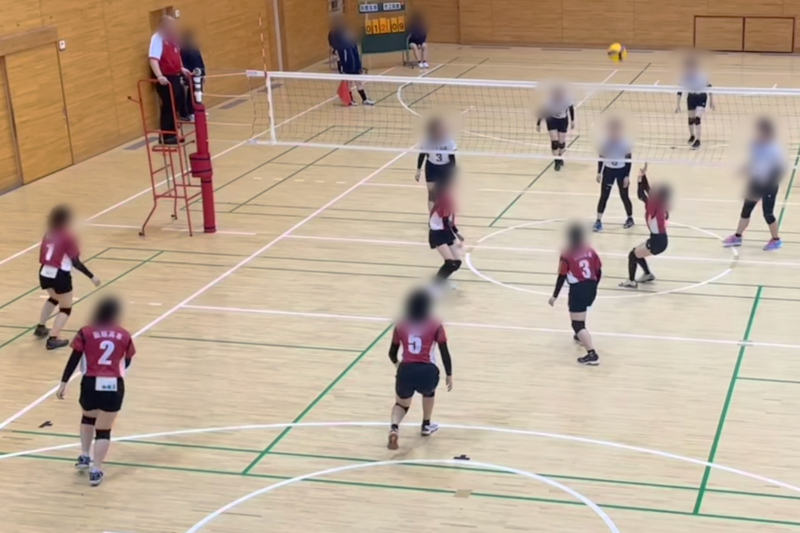
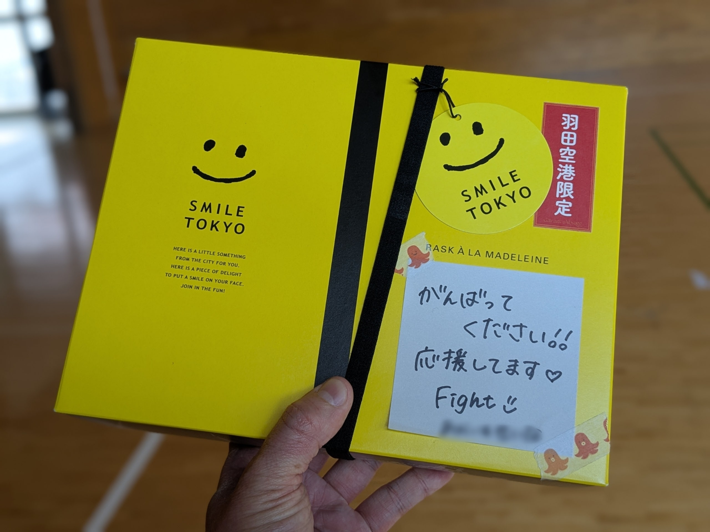
26th April 2025
遺愛女子高等学校, Iai Joshi Women's Academy, Hakodate, Hokkaido,
新入生が入って初めての春季大会へ参加しました。単独チームで出れたのは、良かった点だと思います。 １試合目は大妻高校に惜敗し、２試合目は市立函館に惜敗しました。 奇跡のバックアタックなど、良い点はありましたが、まだまだ力不足は否めません。
写真：試合に参加できない学生が差し入れをくれました。こういう気遣いはとても心温まりますね！Heartwarming!
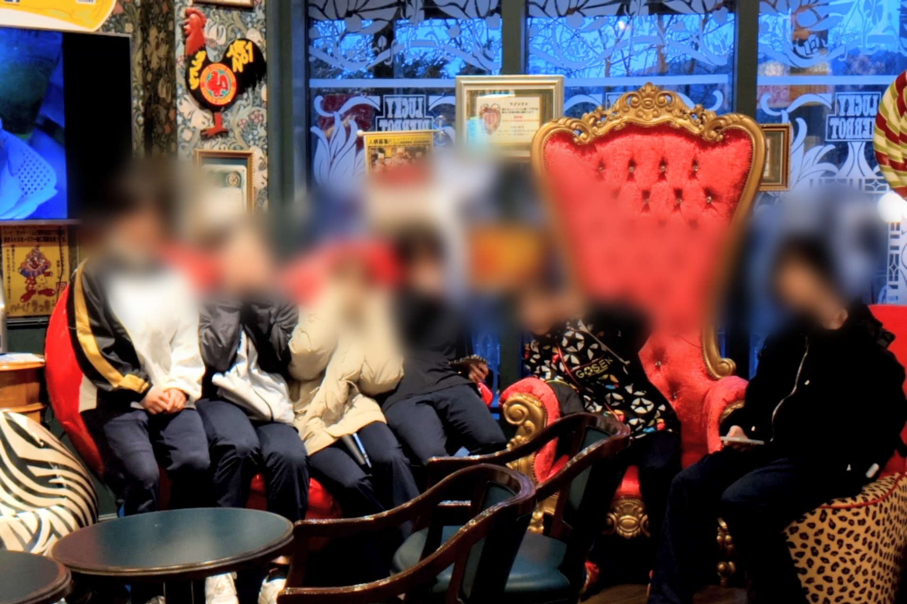
19th April 2025
北海道七飯高校, Nanae High School, Nanae, Kameda, Hokkaido,
七飯高校で合同練習・練習試合をしてきました。５年生が高校生に「あの子なかなかうまい」と言われていた のが面白かったです。
写真は練習帰りに「ラッキーピエロ峠下総本店」に言った時の写真です。思ったより早く提供される、ラッピあるある。
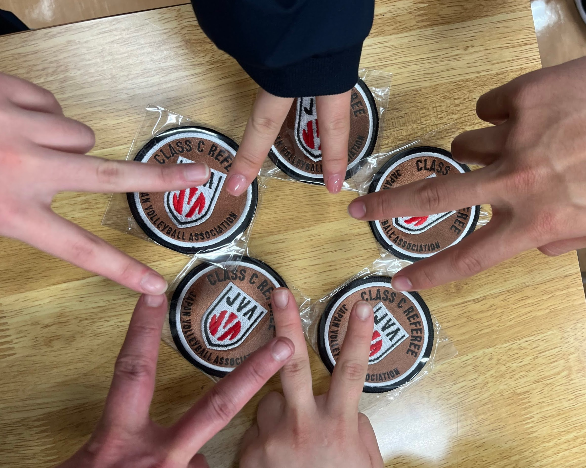
13th April 2025
市立函館高校, Hakodate High School, Hakodate, Hokkaido,
バレーボール審判の公式資格を取得しました。今回受けたのは、日本C級と呼ばれるものです。 講師はプロリーグでも笛を吹いてらっしゃる方(審判的な意味で)で、多くの貴重な話を聞けました。
ダブルコンタクトやキャッチの判断が難しかったですが、バレーボールについて深く学ぶことが出来ました。バレーネットの高さは+2cmの誤差まで許されているそうです。誤差率でいうと、男子は0.8%・女子は0.9%まで許容されていますね。
街中で笛が聞こえたらな、それはバレーボールの始まりなのかもしれない(意味不)。
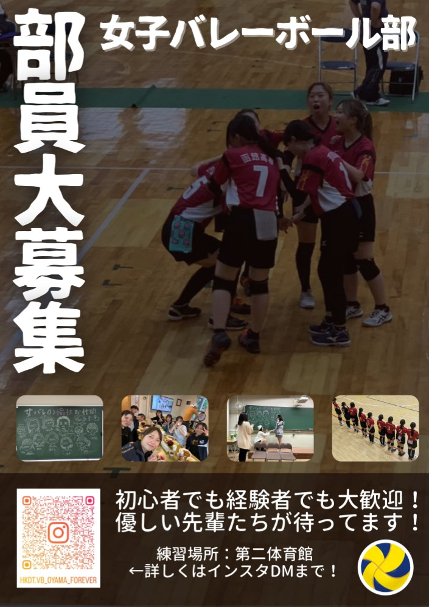
9th April 2025
函館高専, NIT-Hakodate, Hakodate, Hokkaido,
函館高専女子バレー部では新入生を募集しております👍 見学は随時行っていますので。顧問鈴木修(1-2担任)Teamsチャット、 部員にチャット、またはインスタDMでご連絡ください！
●練習日：月水木土（水土は隔週）。●時間：放課後-18:45。
うちは9人中6人が初心者でした。そんな彼女らも「楽しくコツコツ上達」して、今では立派な戦力です。今後は、新入生歓迎会も企画しています。過去問ももらえます（たぶん）。 男子とも練習するので友達も増えます！もちろん、「私が本当のバレーを教えてやんよ」という自信ネキも歓迎です！
WHAT'S NEW (2024)
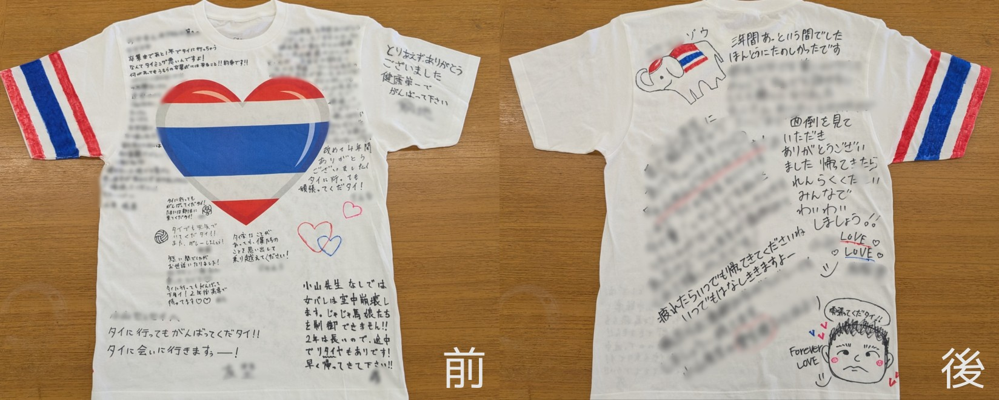
26th March 2025
函館高専, NIT-Hakodate, Hakodate, Hokkaido,
函館高専バレーボール部、主任顧問のO山(おーやま)先生が２年間タイ高専に赴任されます。どうやら本当のようです(顧問２号はまだドッキリだと信じています)。 O山先生への感謝と惜別の気持ちを表すためにTシャツに寄せ書きしました(写真：１部の過激な表現には自主規制)。 タイ変なことも多いと思いますが、やってみるとタイした事はありません！タイ切なことは、真摯なタイ度で、 タイミングよくタイ処することです！ タイ量の成果を期タイしております🇹🇭みんなー！タイの小山先生に良いニュースを届けられるように頑張りましょう👍
Tシャツつくりを手伝ってくれた、K﨑さん・I谷さんありがとうございました🇹🇭
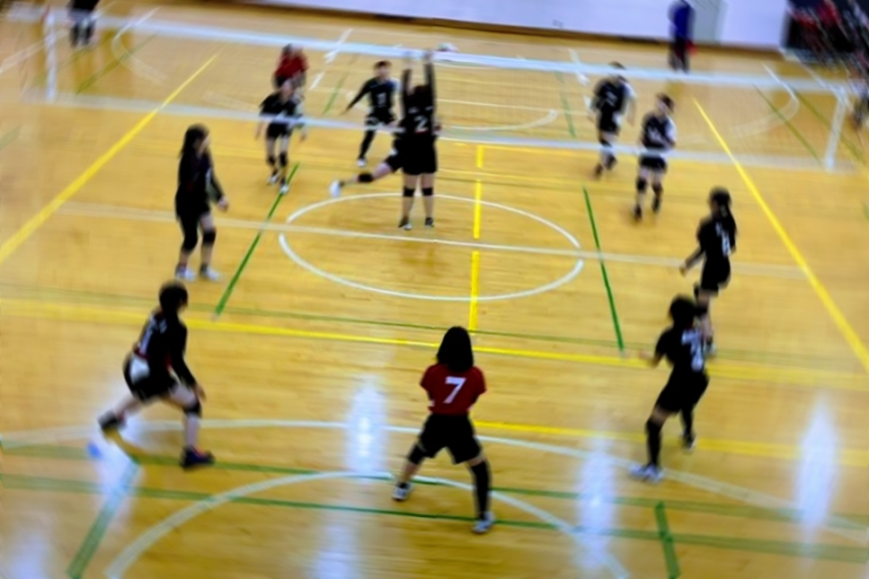
16th March 2025
函館白百合高校, Hakodate Shirayuri Highschool, Hakodate, Hokkaido,
高校新人大会(2025/01/10)に出場した時の写真です。私(顧問２号)は、出張で参加できませんでしたが健闘したようです。 出場できない学生も多く難しいチーム編成を強いられましたが、なんとか出場出来ました。函館大学付属柏稜高等学校の皆様、ありがとうございました。
試合は惜敗です。フルメンバーで戦いたいですね。
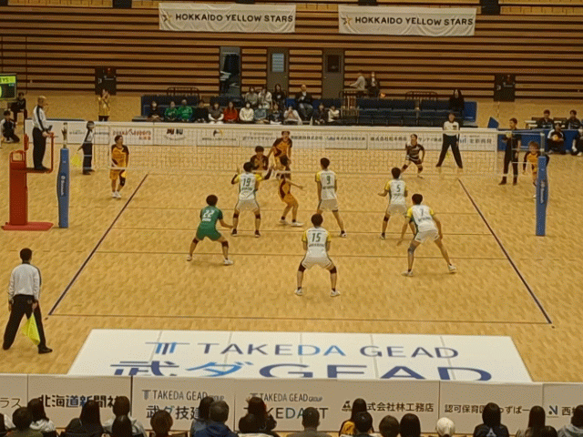
15-16th March 2025
函館アリーナ, Hakodate Arena, Hakodate, Hokkaido,
V League Division 2 北海道イエロースターズの試合運営を手伝いました。北海道イエロースターズは 2023年度シーズン・2024年度シーズンの優勝チームです。今回の試合も相手チームの「つくばユナイテッドSunGAIA」を 圧倒していました。地元チームが勝つのは嬉しいです👍
プロの試合をみるのはとても勉強になります。高さや強さは敵わない点が多いですが、精度などの技術的な点は参考になります。 上手くなれるようにコツコツいきます。
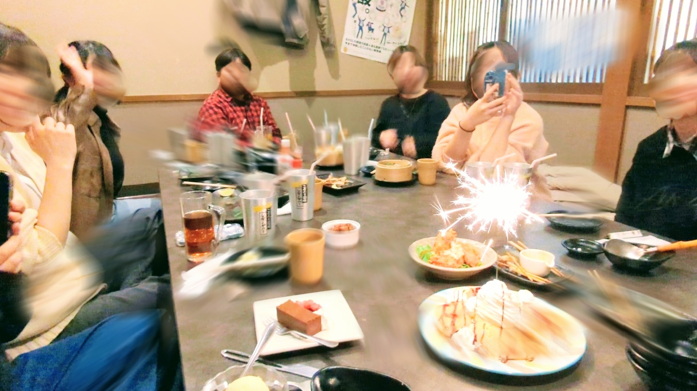
24th February 2025
Hakodate, Hokkaido,
函館高専バレーボール部、主任顧問のO山(おーやま)先生が、２年間タイ高専に赴任されます。O山先生を送る会 「Oやまふぉーえばー」が開催されました。O山先生は、とても学生からの信頼が厚く、すごく親しみやすい監督でした。
送る会では4年生がお手紙を読み上げ、みんなが泣きじゃくる一面もありました。O山先生よ。永遠に。Oやまふぉーえばー。
※O山先生は年に数回函館に帰ってくるようです。帰ってくる度に「Oやまふぉーえばー」しましょう👍
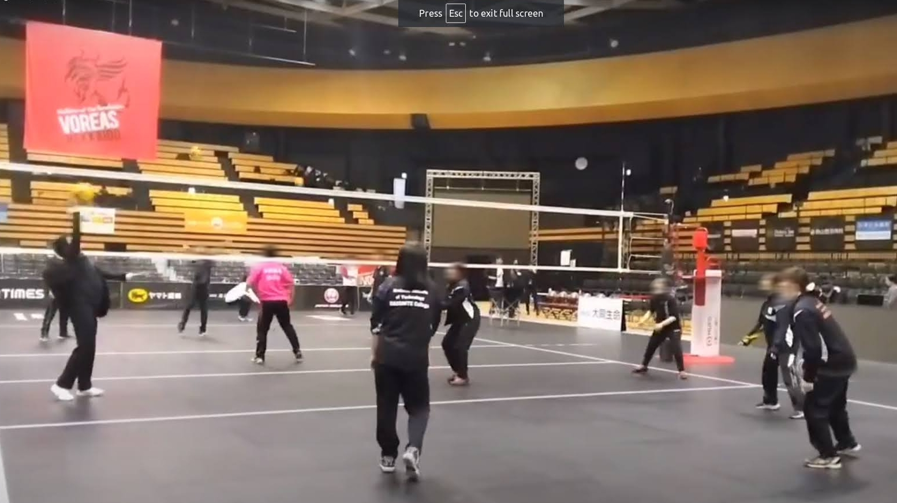
18th January 2025
函館アリーナ, Hakodate Arena, Hakodate, Hokkaido,
SVリーグVoreas北海道のお手伝いに行ってきました。Voreasはサントリーサンバーズに惜敗しました。生で見るバレー選手は 「マジでデカくてカッコいい」って感じです(カジュアルな表現になり失礼しました)。スパイクは早くて床に突き刺さり、ブロックは 本当に「城壁」でした。
試合後はVoreasさんのご厚意でコートに入れてもらいました。プロの試合では、床はTaraflexと呼ばれる塩ビのシートで覆われます。 初めて本物を触りましたが、靴だと滑らないが、フライングレシーブするとさらさら、という不思議な感触でした。 高専の第二体育館がTaraflexになるには後何年かかるでしょう？
ちなみに、写真左のスーツでバレーしているのが私です。穴開けてたら怒られてました。
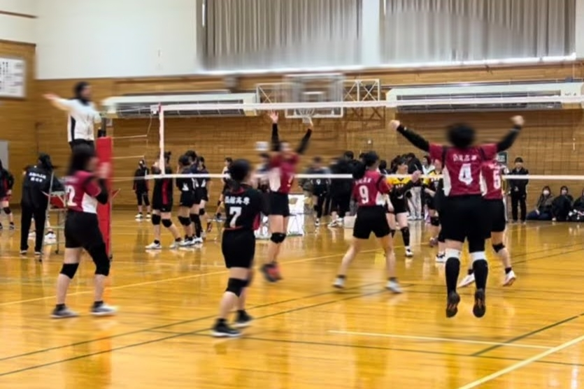
14th December 2024
大妻高校, Ohtsuma Highschool, Hakodate, Hokkaido,
「函館けいりん杯」に参加しました。函館商業・白百合連合軍に2-0で破れ、 その後、infinity-にも2-0で惜敗しました。そりゃーこの世の敗けは、全て「惜敗」です。
今回は高専のオープンキャンパスと日程が重なり、選手の確保が困難でした。センキュー高専!!そんな中、学生たちはあの手この手を使い なんとか出場に漕ぎ着けました。最初は「ダメかな…」と思いましたが、盛り返しました。日々成長を感じております。 写真は助っ人選手が人生初得点をあげた瞬間です。うちの選手が点獲るより嬉しかったです！
最近は、試合中にバレーの技術に関する指導が増えてきました。今年の初めは、「あきらめるな！」「元気をだせ！」 くらいしか、声を書けることが無かったのですが、昨日は「ここに立ってればスパイクくるから」や「サーブやられたら、こうしなさい」などの指示が増えてきました。技術的な指導にも耐えうる知識が付いたのでしょう（希望）！
函館けいりん杯：今年度から函館けいりんがスポンサーに付き名称変更。中学生から社会人まで様々なチームが参加できる大会。 みんな、車券を買って部費を増やそう👍
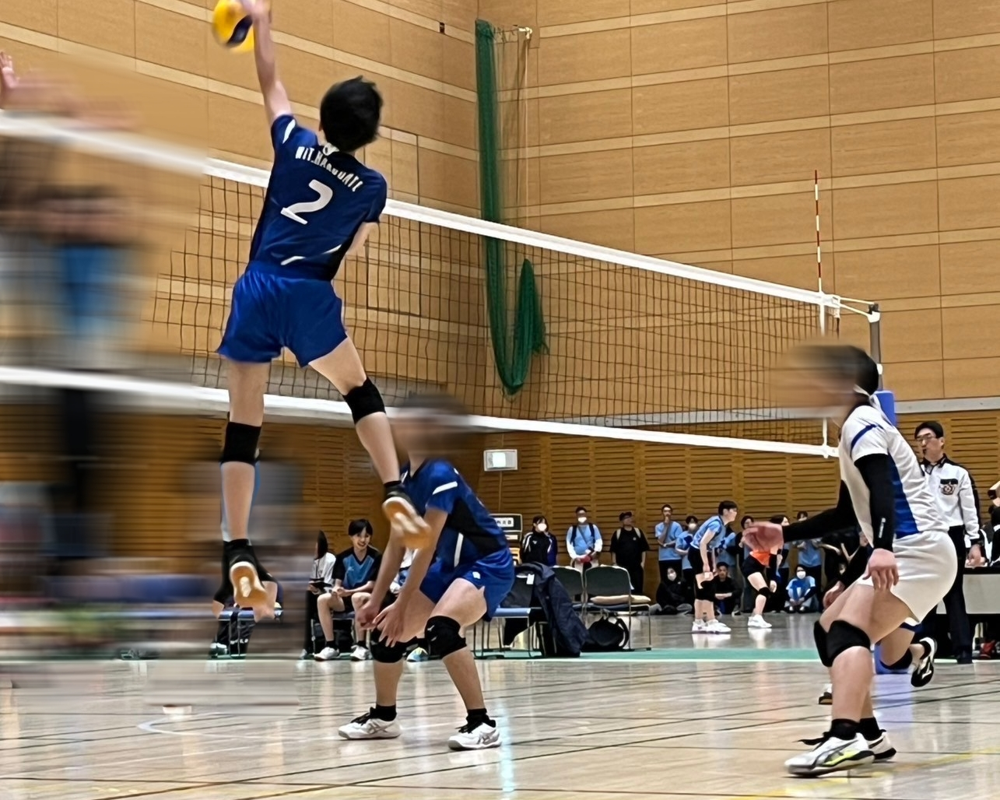
11th November 2024
北海きたえ〜〜〜る, Hokkai Kitayell, Sapporo, Hokkaido,
男子バレー部は春高予選全道大会に出場しましたー！ 室蘭工業に惜敗しましたが、全道レベルを体感して得た経験値は大きいと思います！
女子の試合も見れたので、指導技術を色々盗んできました😎 まだまだやれます！がんばるます！💪
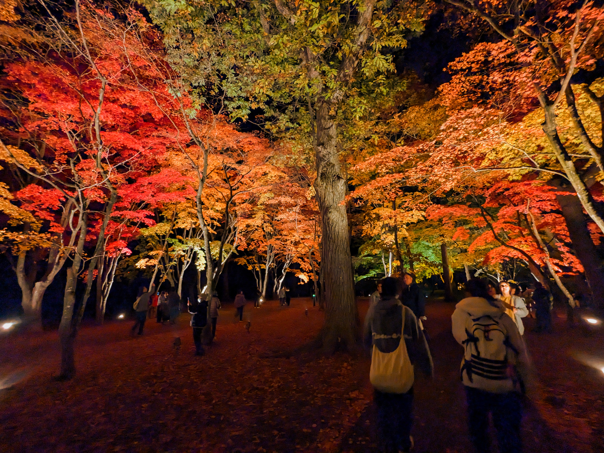
2nd November 2024
香雪園, Kousetsu-En, Hakodate, Hokkaido,
練習の終わりに女バレ部員と香雪園に行きました。この時期の香雪園では、 紅葉がライトアップされています。季節によってこんなにも自然の見た目が変わるのは、本当に不思議です。
練習の後に結構な距離を歩いたので、ふくらはぎがピリピリします。
PS. この前、初めてこのバレー日記の読者学生に現実で会いました。嬉しかったです。入部届出しておきます。
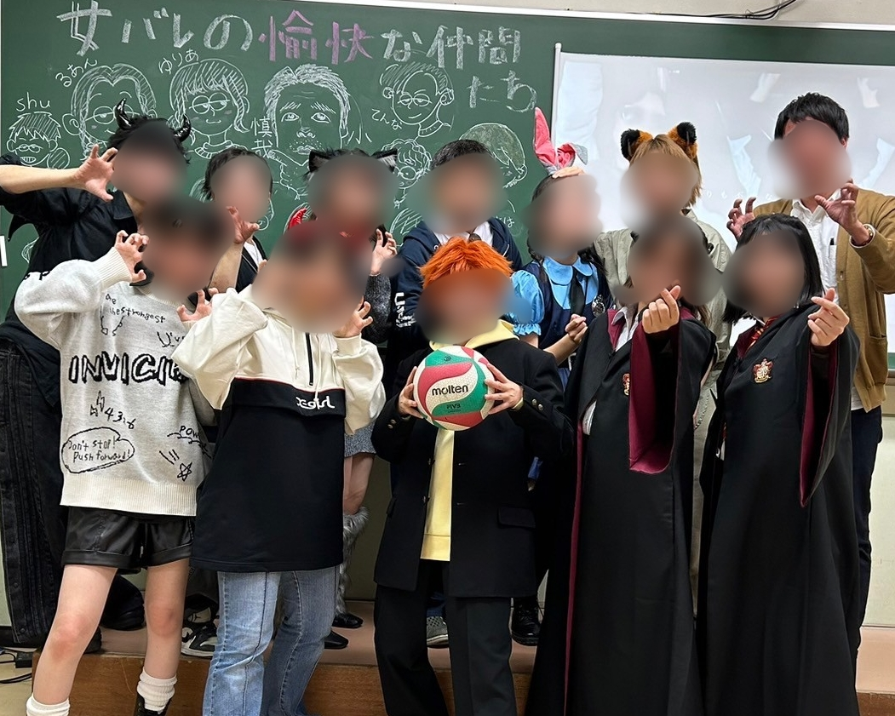
28th October 2024
函館高専, NIT-Hakodate, Hakodate, Hokkaido,
文化祭の一日目が無事に終わりました。朝、模擬店に行くと普通に日向翔陽さんがいました(写真)。本物です。思っていたより小さかったです。
前日のバタバタ感とは打って変わって安定したお店運営でしたね。「ロシアン小山」の「小山」を引いた人の「うぇぇぇー」というリアクションが面白かったです。
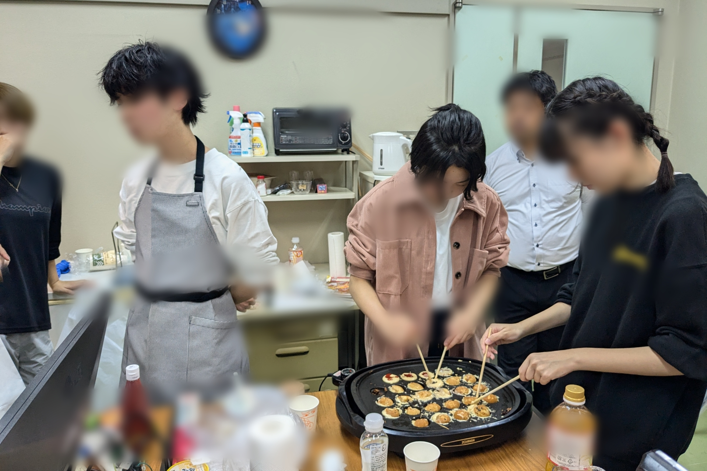
14th October 2024
函館高専, NIT-Hakodate, Hakodate, Hokkaido,
文化祭(=学祭=高専祭)の準備をしています。去年の模擬店とは大きく異なるものになるそうですよ。ぼくは「ロシアン小山」という言葉を妙に気に入っています。
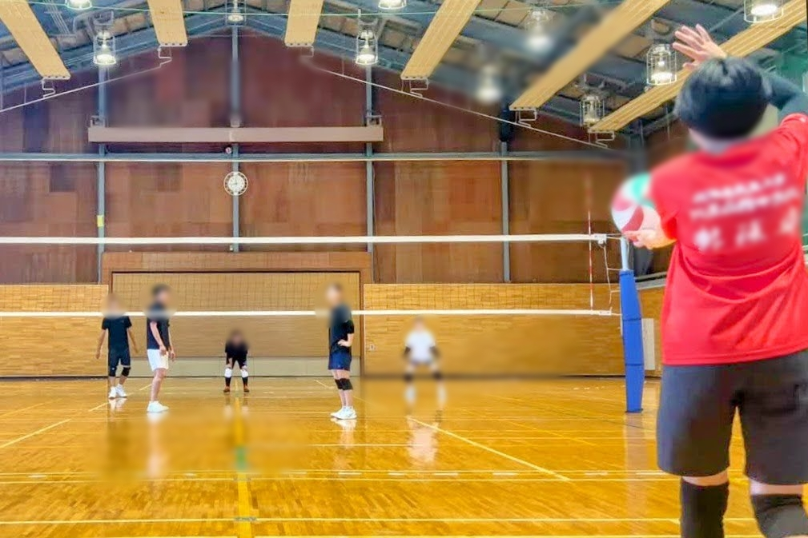
28th August 2024
函館高専, NIT-Hakodate, Hakodate, Hokkaido,
夏休みも練習しています。寮生が帰省するので人数調整が難しいですが、 個人練習（弱点克服コース）に時間を使えます。
練習予定日：8/12, 14, 28, 30, 31.
練習予定日：9/9, 11, 13, 14, 16, 17, 18, 20, 21, 23, 25, 30.
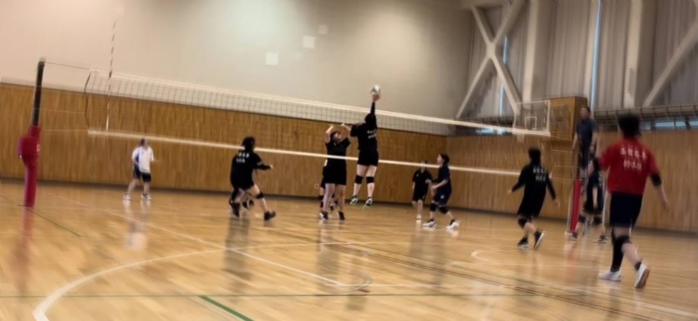
7th August 2024
函館水産高校, Hokkaido Hakodate Fisheries High School, Hokkaido,
函館水産高校女子バレー部の皆様と練習試合をしました。函館水産も新チームということでかなり拮抗した試合になったと思います。高専チームも実戦のなかで色々と試し挑戦出来たのは収穫ですね。
この度、ご協力いただいた水産高校バレー部の皆様、線審をして頂いた男子選手の皆様に熱く御礼申し上げます。また、マネージャーバッグを忘れたのは私です...すみませぬ...
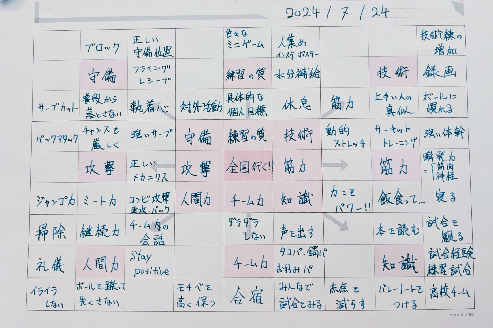
24th July 2024
函館高専図書館会議室, Meeting room, NIT-Hakodate, Hokkaido,
今日はミーティングしました。私が赴任してからの初の本格的なミーティングでした。 合宿、練習試合、新マネージャー紹介、チーム目標など色々話しました。釧路から帰ってきてから、彼女たちはやる気です！
目標シートは大谷選手スタイルです。まずは人間力。早く人間になれるように頑張ります。。。
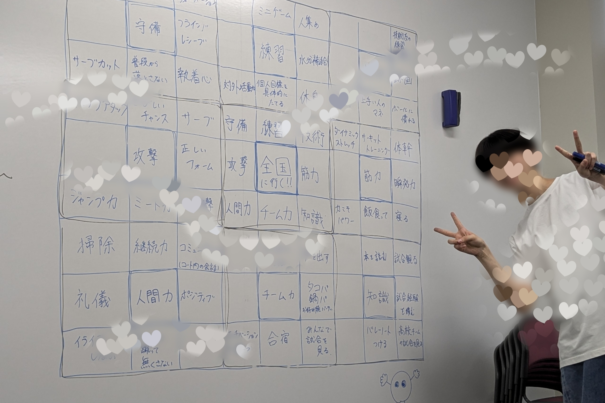
19th July 2024
函館高専, NIT-Hakodate, Hakodate, Hokkaido,
な、な、な、なんと、女子バレー部にマネージャーさんが入ってくれましたー!!
初めは大変だと思いますが、すぐになれると思います！頑張っていいチームにしましょう！
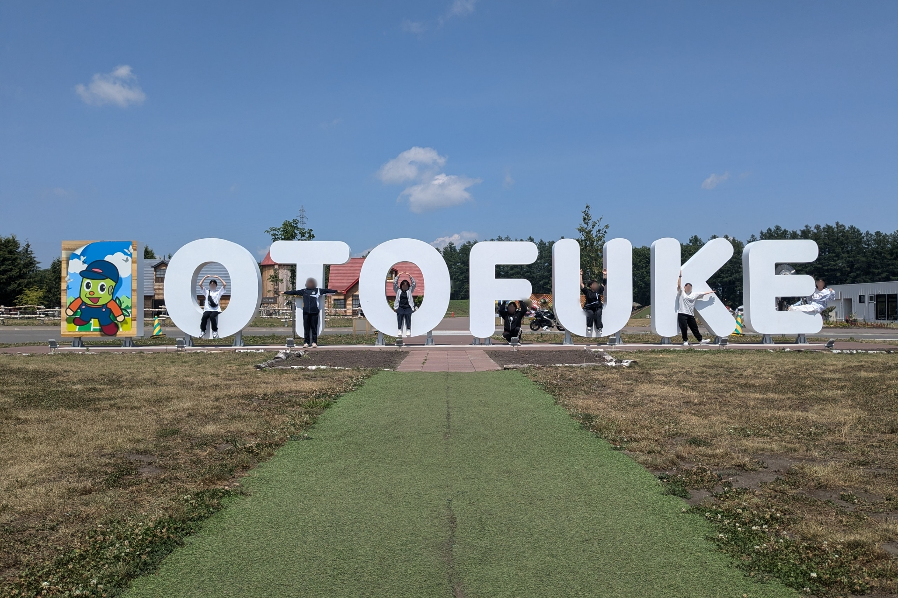
14th July 2024
道の駅おとふけ なつぞらのふる里, 北海道音更, Otofuke, Hokkaido,
帰り道に音更に寄りました。いい写真ですね。
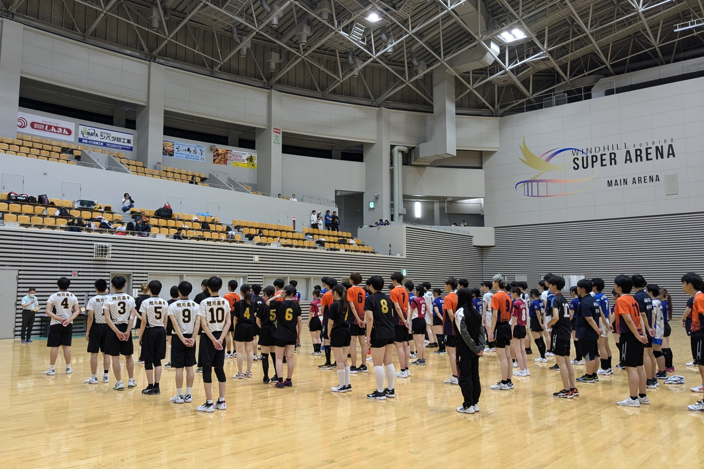
12th-13th July 2024
Windhill Kushiro Super Arena（湿原の風アリーナ釧路）, Kushiro, Hokkaido,
高専体育大会の北海道地区予選に参加しました。
男子は準優勝、女子は３位でした。
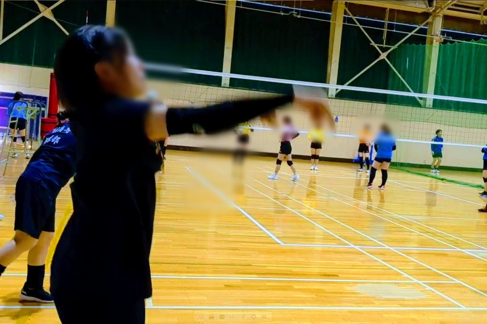
11th July 2024
National Institute of Technology, Kushiro College, Kushiro, Hokkaido,
釧路高専と練習試合をしました。負けてしまいましたが。収穫は多いです。 釧路高専の練習シャツがカラフルで素敵でした。
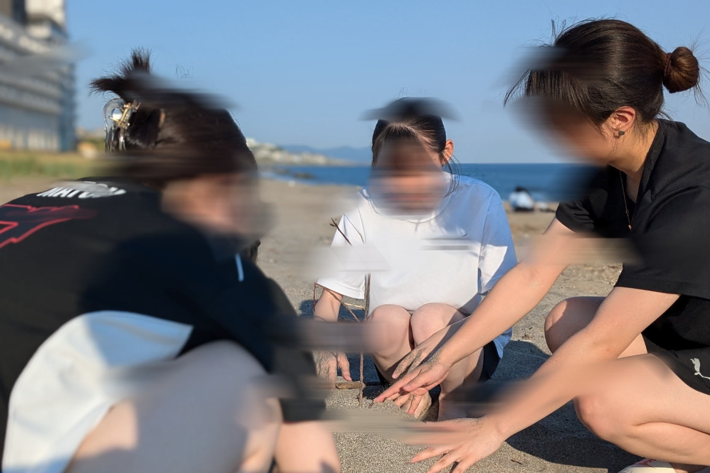
June 2024
Hakodate, Hokkaido,
海だぁぁぁ--！たまには、海で息抜きです。もちろんビーチバレーボールを持っていきます。
「男女交互に触る」ルールをつけてラリーをすると、意外と続きません！練習が必要！
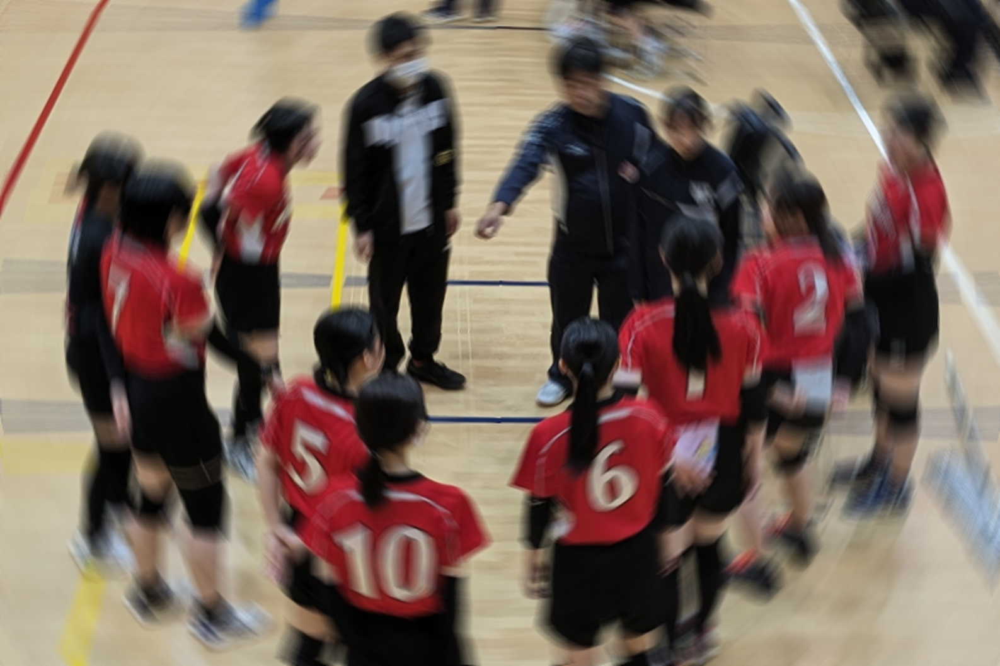
June 2024
Hakodate, Hokkaido,
高体連大会に出ました。高校チーム(3年生以下)は人数が足りないので、函大柏稜の皆さんとの合同チームで出場しました。
1セット取れたのは良い成果だと思います。慣れないチームでプレーする事も含めて、良い経験になったと思います。
PLAYER
-
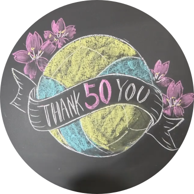
Ms. Example
Position
Number n (n ∈ N)
Height
Class
Place
Personality
Comment
-
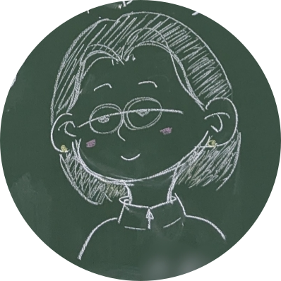
わっち
OH
#1
157cm
3Z
仙台→収容
プレッシャー❌
サーブでネットを破る！
-
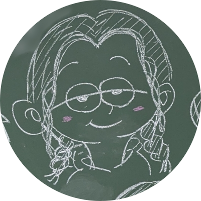
るちを
MB
#2
5'4
5SM
ナイジェリア
ものほんの奇人
気の流れを感じる
-
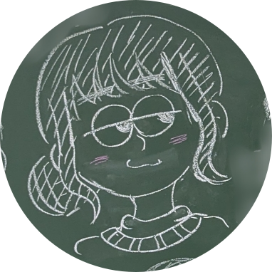
ゆったん
OP
#3
154cm
5SM
函館
超絶マイペース
マイペース
-
てん
OP
#4
154って言いたい
ギリ5SM
I love Nanae❤️
キレ症
肘爆発💣
-
ぴーちゃん
OH
#5
160(腕は短め)
5SM
七飯
コミュ強
TOEIC１兆点 -
みおんぬ
MB
#6
162cm
3C
昆布→収容
ストイック
C型の変顔 -
メロン
L
#7
151cm
2SM
Gunmer
たまに狂う
群馬まで泳いで帰れる -
ゆのち
MB
#5
りんご3つぶん
2SM
Singapore
大雑把？
ピアノ弾ける -
じゅんてぃ
Ace attacker
???
No data
5SM
函館
かわいい
みんなのためにがんばるっ！
TRAINER
-
O山しんや(โอยามะ ชินยะ)
名将
1.0×10^0 [Oyama]
Human Interface
宮城
おもしろ
乗り鉄
特技：10連覇
タイ🇹🇭
-
しゅ--!!
コーチ/WEB管理人
目測で188cm
応用物理
オランダ
マイペース
物理、写真
白菜
肝臓の数値が通常の3倍
GALLERY
CONTACT
-
〒042-0953
北海道函館市戸倉町14-1 第二体育館担当者: 鈴木修（すずきしゅう）
Email: shu.suzuki_at_hakodate-ct.ac.jp
(Please replace _at_ by @)TEL: +81-138-59-6366
営業時間 8:30〜17:00
※都合により休業する場合がございます
-